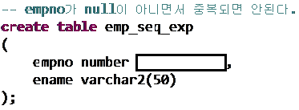

<!DOCTYPE html>
<html>
<head>
<meta charset="UTF-8">
<title>localStorage Question And Answer</title>
<style type="text/css">
body {
	background: url("img/title.jpg") no-repeat;
	background-size: cover;
}
/*
		*/
</style>
<script type="text/javascript">
			var cnt=0;
			var quest = new Array(4);
			for(var i=0; i<=3; i++)
			{
				quest[i] = new Array(5);
			}
			for(i=0; i<=3; i++)								// quest에 값을 그냥 지정. 안하니까 마지막 값만 나오더라.. 이유는 몰라
			{
				for(var j=0; j<=4; j++)
				{
					if(cnt<=9) quest[i][j]='0'+cnt;
					else quest[i][j]= cnt;
					cnt++;
				}
			}
			localStorage.clear();								// 브라우저에 원래 있을 storage 값 초기화
			// 답
			// 1. sql
			localStorage[quest[0][0]] = "transaction";
			localStorage[quest[0][1]] = "ddl";
			localStorage[quest[0][2]] = "sql";
			localStorage[quest[0][3]] = "checked";
			localStorage[quest[0][4]] = "table_mod";
			// 2. db 구현
			localStorage[quest[1][0]] = "subquery";
			localStorage[quest[1][1]] = "merge";
			localStorage[quest[1][2]] = "primary_key";
			localStorage[quest[1][3]] = "dongbeom";
			localStorage[quest[1][4]] = "ts001";
			/* // 3. 프로그래밍 언어 활용
			localStorage[quest[2][0]] = "transaction";
			localStorage[quest[2][1]] = "transaction";
			localStorage[quest[2][2]] = "transaction";
			localStorage[quest[2][3]] = "transaction";
			localStorage[quest[2][4]] = "transaction";
			// 4. 응용SW 기초기술 활용
			localStorage[quest[3][0]] = "transaction";
			localStorage[quest[3][1]] = "transaction";
			localStorage[quest[3][2]] = "transaction";
			localStorage[quest[3][3]] = "transaction";
			localStorage[quest[3][4]] = "transaction";
			// 5. 애플리케이션 배포
			localStorage[quest[4][0]] = "transaction";
			localStorage[quest[4][1]] = "transaction";
			localStorage[quest[4][2]] = "transaction";
			localStorage[quest[4][3]] = "transaction";
			localStorage[quest[4][4]] = "transaction";
			// 6. 애플리케이션 구현
			localStorage[quest[5][0]] = "transaction";
			localStorage[quest[5][1]] = "transaction";
			localStorage[quest[5][2]] = "transaction";
			localStorage[quest[5][3]] = "transaction";
			localStorage[quest[5][4]] = "transaction";
			// 7. 애플리케이션 테스트 수행
			localStorage[quest[6][0]] = "transaction";
			localStorage[quest[6][1]] = "transaction";
			localStorage[quest[6][2]] = "transaction";
			localStorage[quest[6][3]] = "transaction";
			localStorage[quest[6][4]] = "transaction";
			// 8. 개발자 테스트
			localStorage[quest[7][0]] = "transaction";
			localStorage[quest[7][1]] = "transaction";
			localStorage[quest[7][2]] = "transaction";
			localStorage[quest[7][3]] = "transaction";
			localStorage[quest[7][4]] = "transaction";
			// 9. 빅데이터 수집
			localStorage[quest[8][0]] = "transaction";
			localStorage[quest[8][1]] = "transaction";
			localStorage[quest[8][2]] = "transaction";
			localStorage[quest[8][3]] = "transaction";
			localStorage[quest[8][4]] = "transaction";
			// 10. 빅데이터 저장
			localStorage[quest[9][0]] = "transaction";
			localStorage[quest[9][1]] = "transaction";
			localStorage[quest[9][2]] = "transaction";
			localStorage[quest[9][3]] = "transaction";
			localStorage[quest[9][4]] = "transaction";
			// 11. 분석용 데이터 탐색
			localStorage[quest[10][0]] = "transaction";
			localStorage[quest[10][1]] = "transaction";
			localStorage[quest[10][2]] = "transaction";
			localStorage[quest[10][3]] = "transaction";
			localStorage[quest[10][4]] = "transaction";
			// 12. NCS 정보능력
			localStorage[quest[11][0]] = "transaction";
			localStorage[quest[11][1]] = "transaction";
			localStorage[quest[11][2]] = "transaction";
			localStorage[quest[11][3]] = "transaction";
			localStorage[quest[11][4]] = "transaction";
			// 13. Linux Admin
			localStorage[quest[12][0]] = "transaction";
			localStorage[quest[12][1]] = "transaction";
			localStorage[quest[12][2]] = "transaction";
			localStorage[quest[12][3]] = "transaction";
			localStorage[quest[12][4]] = "transaction";
			// 14. 빅데이터 기술
			localStorage[quest[13][0]] = "transaction";
			localStorage[quest[13][1]] = "transaction";
			localStorage[quest[13][2]] = "transaction";
			localStorage[quest[13][3]] = "transaction";
			localStorage[quest[13][4]] = "transaction"; */
			
			// 문제 저장
			// 1. sql
			localStorage[quest[2][0]] = '<h2>문제 1.</h2>Database에서 처리의 한 단위를 나타내는 단어로 옳은 것은?<br><br><br><input type="radio" name="q_1_1" id="ans_1_1" value = "transaction"/>a. Transaction&nbsp;<input type="radio" name="q_1_1" value = "b"/>b. Data&nbsp;<input type="radio" name="q_1_1" value = "c"/>c. Manipulation&nbsp;<input type="radio" name="q_1_1" value = "d"/>d. Savepoint<br><br><br><hr/>';
			localStorage[quest[2][1]] = '<h2>문제 2.</h2>Database에서 사용되는 명령어 중 table의 구조 생성, 변경 및 삭제에 특화된 언어는?<br><br><br><input type="radio" name="q_1_2" value = "a"/>a. DML&nbsp;<input type="radio" name="q_1_2" value = "b"/>b. TCL&nbsp;<input type="radio" name="q_1_2" id="ans_1_2" value = "ddl"/>c. DDL&nbsp;<input type="radio" name="q_1_2" value = "d"/>d. DCL<br><br><br><hr/>';
			localStorage[quest[2][2]] = '<h2>문제 3.</h2>사용자와 관계형 데이터베이스를 연결시켜주는 표준 검색 언어로관계형 질의 언어라고도 불리는 것은?<br><br><br><input type="radio" name="q_1_3" value = "a"/>a. JAVA&nbsp;<input type="radio" name="q_1_3" value = "b"/>b. Database&nbsp;<input type="radio" name="q_1_3" id="ans_1_3" value = "sql" />c. SQL&nbsp;<input type="radio" name="q_1_3" value = "d"/>d. CSS<br><br><br><hr/>';
			localStorage[quest[2][3]] = '<h2>문제 4.</h2>무결성 제약 조건은 5가지가 있다. 다음 중 제약 조건이 아닌 keyword는?<br><br><br><input type="radio" name="q_1_4" value = "a"/>a. NOT NULL&nbsp;&nbsp;&nbsp;&nbsp;&nbsp;&nbsp;&nbsp;&nbsp;&nbsp;&nbsp;&nbsp;&nbsp;<input type="radio" name="q_1_4" value = "b"/>b. UNIQUE<br><input type="radio" name="q_1_4" value = "c"/>c. PRIMARY KEY&nbsp;&nbsp;&nbsp;&nbsp;&nbsp;&nbsp;&nbsp;&nbsp;<input type="radio" name="q_1_4" value = "checked"/>d. CHECKED<br><br><br><hr/>';
			localStorage[quest[2][4]] = '<h2>문제 5.</h2>INDEX란 data에 빠르게 접근하는 것을 도와 Database의 성능향상에 도움을 주는 객체를 말한다.다음 중 INDEX 사용 시기로 적절하지 않은 것은?<br><br><br><input type="radio" name="q_1_5" value = "table_mod"/>a. table에 입력, 수정, 삭제가 자주 일어날 때<br><input type="radio" name="q_1_5" value = "b"/>b. where문으로 index에 해당하는 column이 많이 사용될 때<br><input type="radio" name="q_1_5" value = "c"/>c. table 행의 수(data 수)가 많을 때<br><input type="radio" name="q_1_5" value = "d"/>d. 검색 결과가 전체 data의 2~4% 정도로 적을 때<br><br>';
			// 2. db 구현
			localStorage[quest[3][0]] = '<h2>문제 1.</h2>하나의 SELECT 문장의 절 안에 포함된 또 하나의 SELECT 문장을 무엇이라 하는가?<br><br><br><input type="radio" name="q_2_1" id="ans_2_1" value = "subquery"/>a. SubQuery&nbsp;&nbsp;&nbsp;&nbsp;&nbsp;&nbsp;&nbsp;&nbsp;&nbsp;&nbsp;&nbsp;&nbsp;&nbsp;&nbsp;&nbsp;&nbsp;&nbsp;&nbsp;&nbsp;&nbsp;<input type="radio" name="q_2_1" value = "b"/>b. Main Query<br><input type="radio" name="q_2_1" value = "c"/>c. Spread sheet&nbsp;&nbsp;&nbsp;&nbsp;&nbsp;&nbsp;&nbsp;&nbsp;&nbsp;&nbsp;&nbsp;&nbsp;&nbsp;&nbsp;&nbsp;&nbsp;<input type="radio" name="q_2_1" value = "d"/>d. Hierarchical structure<br><br><br><hr/>';
			localStorage[quest[3][1]] = '<h2>문제 2.</h2>Data Migration 할 때 사용되며, DML에서 Update와 Insert 기능을 동시에 수행 할 수 있는 명령어는?<br><br><br><input type="radio" name="q_2_2" value = "a"/>a. Select&nbsp;<input type="radio" name="q_2_2" value = "merge"/>b. Merge&nbsp;<input type="radio" name="q_2_2" value = "c"/>c. Move&nbsp;<input type="radio" name="q_2_2" value = "d"/>d. Migrat<br><br><br><hr/>';
			localStorage[quest[3][2]] = '<h2>문제 3.</h2>다음 빈칸에 들어갈 명령어로 적절한 것은?<br><br><div id="imgQ01"></div><br><br><br><input type="radio" name="q_2_3"value = "a"/>a. NOT NULL&nbsp;&nbsp;&nbsp;&nbsp;&nbsp;<input type="radio" name="q_2_3" value = "b"/>b. NULL<br><input type="radio" name="q_2_3" value = "primary_key"/>c. PRIMARY KEY&nbsp;<input type="radio" name="q_2_3" value = "d"/>d. FOREIGN KEY<br><br><br><hr/>';
			localStorage[quest[3][3]] = '<h2>문제 4.</h2>Sequence 코드에 대한 한 반응으로 적절하지 않은 것은?<br><br><div id="imgQ02"></div><br><br><br><input type="radio" name="q_2_4" value = "a"/>a. 준혁 : 이 Sequence의 이름은 exp01_seq야.<br><input type="radio" name="q_2_4" value = "b"/>b. 주형 : start with는 시작값을 정하는 명령어로 이번 sequence에서는 1이야.<br><input type="radio" name="q_2_4" value = "c"/>c. 근희 : increment by는 sequence의 증감을 결정하며 (-)값을 넣으면 감소도 돼.<br><input type="radio" name="q_2_4" value = "dongbeom"/>d. 동범 : 이 sequence의 최대값은 99999이고, 최대값을 넘으면 다시 초기값으로 돌아가.<br><br><br><hr/>';
			localStorage[quest[3][4]] = '<h2>문제 5.</h2>TableSpace 코드에 대한 설명으로 적절하지 않은 것은?<br><br><div></div><br><input type="radio" name="q_2_5" value = "ts001"/>a. 파일 이름은 ts001 이다.<br><input type="radio" name="q_2_5" value = "b"/>b. C드라이브 a01_prog 폴더 안의 database폴더에 저장된다.<br><input type="radio" name="q_2_5" value = "c"/>c. 초기 크기는 약 1Mb이다.<br><input type="radio" name="q_2_5" value = "d"/>d. 생성할 수 있는 최대 extents는 128이다.<br><br>';
			/* // 3. 프로그래밍 언어 활용
			localStorage[quest[2][0]] = "transaction";
			localStorage[quest[2][1]] = "transaction";
			localStorage[quest[2][2]] = "transaction";
			localStorage[quest[2][3]] = "transaction";
			localStorage[quest[2][4]] = "transaction";
			// 4. 응용SW 기초기술 활용
			localStorage[quest[3][0]] = "transaction";
			localStorage[quest[3][1]] = "transaction";
			localStorage[quest[3][2]] = "transaction";
			localStorage[quest[3][3]] = "transaction";
			localStorage[quest[3][4]] = "transaction";
			// 5. 애플리케이션 배포
			localStorage[quest[4][0]] = "transaction";
			localStorage[quest[4][1]] = "transaction";
			localStorage[quest[4][2]] = "transaction";
			localStorage[quest[4][3]] = "transaction";
			localStorage[quest[4][4]] = "transaction";
			// 6. 애플리케이션 구현
			localStorage[quest[5][0]] = "transaction";
			localStorage[quest[5][1]] = "transaction";
			localStorage[quest[5][2]] = "transaction";
			localStorage[quest[5][3]] = "transaction";
			localStorage[quest[5][4]] = "transaction";
			// 7. 애플리케이션 테스트 수행
			localStorage[quest[6][0]] = "transaction";
			localStorage[quest[6][1]] = "transaction";
			localStorage[quest[6][2]] = "transaction";
			localStorage[quest[6][3]] = "transaction";
			localStorage[quest[6][4]] = "transaction";
			// 8. 개발자 테스트
			localStorage[quest[7][0]] = "transaction";
			localStorage[quest[7][1]] = "transaction";
			localStorage[quest[7][2]] = "transaction";
			localStorage[quest[7][3]] = "transaction";
			localStorage[quest[7][4]] = "transaction";
			// 9. 빅데이터 수집
			localStorage[quest[8][0]] = "transaction";
			localStorage[quest[8][1]] = "transaction";
			localStorage[quest[8][2]] = "transaction";
			localStorage[quest[8][3]] = "transaction";
			localStorage[quest[8][4]] = "transaction";
			// 10. 빅데이터 저장
			localStorage[quest[9][0]] = "transaction";
			localStorage[quest[9][1]] = "transaction";
			localStorage[quest[9][2]] = "transaction";
			localStorage[quest[9][3]] = "transaction";
			localStorage[quest[9][4]] = "transaction";
			// 11. 분석용 데이터 탐색
			localStorage[quest[10][0]] = "transaction";
			localStorage[quest[10][1]] = "transaction";
			localStorage[quest[10][2]] = "transaction";
			localStorage[quest[10][3]] = "transaction";
			localStorage[quest[10][4]] = "transaction";
			// 12. NCS 정보능력
			localStorage[quest[11][0]] = "transaction";
			localStorage[quest[11][1]] = "transaction";
			localStorage[quest[11][2]] = "transaction";
			localStorage[quest[11][3]] = "transaction";
			localStorage[quest[11][4]] = "transaction";
			// 13. Linux Admin
			localStorage[quest[12][0]] = "transaction";
			localStorage[quest[12][1]] = "transaction";
			localStorage[quest[12][2]] = "transaction";
			localStorage[quest[12][3]] = "transaction";
			localStorage[quest[12][4]] = "transaction";
			// 14. 빅데이터 기술
			localStorage[quest[13][0]] = "transaction";
			localStorage[quest[13][1]] = "transaction";
			localStorage[quest[13][2]] = "transaction";
			localStorage[quest[13][3]] = "transaction";
			localStorage[quest[13][4]] = "transaction"; */
						
		</script>
</head>
<body>
</body>
</html>
